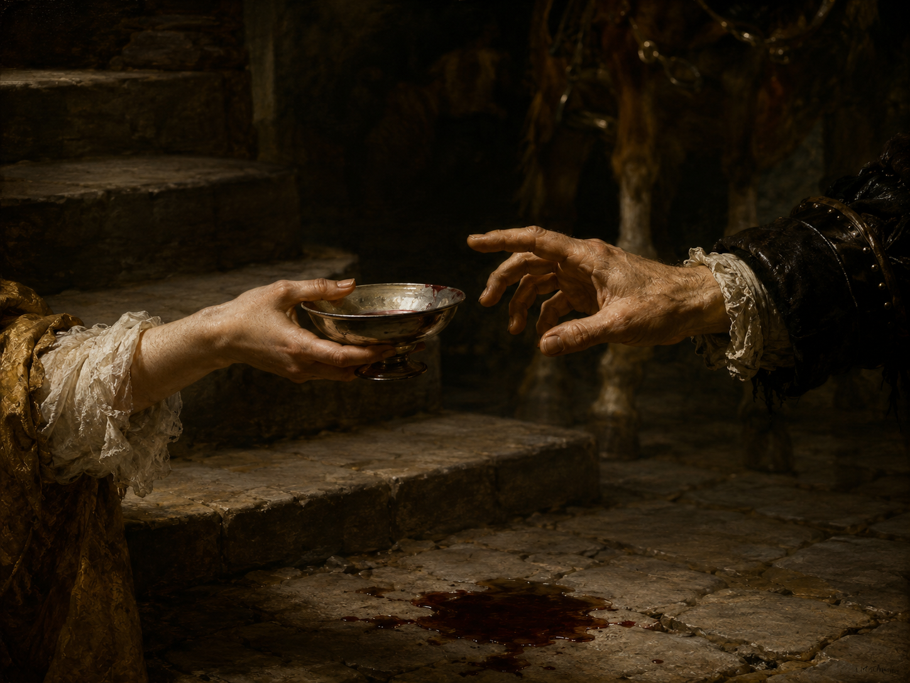

Sie trug den Becher in der Hand
全诗以最简单的陈述开篇，没有任何修饰。der Becher 指无柄的杯、盏（与 die Tasse 带柄的杯、das Glas 玻璃杯区分），带有仪式感。全诗至此还看不出任何张力。
他们两个
早期诗作（生前收入各种选本，如 Hans Bethge 编《利利恩克龙以来的德语抒情诗》1921）
维也纳现代派 / 世纪末（Fin de Siècle）
1896年作

图片由 AI 生成
Sie trug den Becher in der Hand
全诗以最简单的陈述开篇，没有任何修饰。der Becher 指无柄的杯、盏（与 die Tasse 带柄的杯、das Glas 玻璃杯区分），带有仪式感。全诗至此还看不出任何张力。
– Ihr Kinn und Mund glich seinem Rand –,
破折号中的插入句。请注意动词用单数 glich（而非复数 glichen），尽管主语是两个并列名词 Kinn und Mund——霍夫曼斯塔尔把"下颌与嘴"当作一个整体来处理。gleichen（相似）支配第三格宾语（seinem Rand）。seinem 指 der Becher（杯子）而非那位男子——这一点在第二节出现男主角后极易误读。此行另有作 glichen 的版本，详见校对记录。
So leicht und sicher war ihr Gang,
leicht（轻盈）与 sicher（稳当）这对形容词将在下一节以 "leicht und fest" 的形式回响——只换了一个词。这种"几乎相同"是全诗结构的核心：两人各自都完美，且完美的方式如此相似。
Kein Tropfen aus dem Becher sprang.
springen（跳、溅）的过去时 sprang。第一节的证明方式是一个否定：什么也没有发生——正是这种"什么也没洒"，衬托出第三节酒洒在地上的分量。
So leicht und fest war seine Hand:
与第3行呼应，句式几乎完全相同（So leicht und …），只是把 sicher 换成 fest（坚定），把 ihr Gang 换成 seine Hand。冒号预告下面要给出证据。注意：全诗中 die Hand（手）出现五次，是绝对的关键词。
Und mit nachlässiger Gebärde
die Gebärde（姿势、手势）是雅语，较 die Geste 更具身体性与戏剧性。nachlässig（漫不经心的、随意的）在此是褒义：真正的掌控无需用力。这是世纪末维也纳所推崇的"优雅"（Grazie）观念。
Erzwang er, daß es zitternd stand.
erzwingen（强行使得、迫使）与前一行的 nachlässig 构成张力：漫不经心地"强迫"。es 指 das Pferd（中性）。zitternd（颤抖着）是全诗第一次出现颤抖——此时颤抖的还是马，到第三节将轮到这两个人。
Jedoch, wenn er aus ihrer Hand
Jedoch（然而）标出全诗的转折。请注意 wenn 从句的谓语要到下一行行末才出现（nehmen sollte），而主句要到第11行才开始——第三节一开头就把语法悬置起来，读者与诗中人一样陷入等待。
Den leichten Becher nehmen sollte,
der leichte Becher（那只轻轻的杯子）——leicht 一词在此第三次出现（前两次形容她的步态与他的手），如今落在了杯子上。刚才两人都能轻盈地掌控，如今连一件"轻"的东西也交接不了。这是全诗最精巧的一处词语调度。
So war es beiden allzu schwer:
schwer（沉重、困难）直接对上 leicht（轻），构成全诗的语义轴心。beiden 是第三格复数（对两人而言）。allzu（过于）加强程度。冒号引出原因。部分谱曲版本（勋伯格、策姆林斯基）在此作 "gar zu schwer"，详见校对记录。
Denn beide bebten sie so sehr,
beben（颤抖）较 zittern 更深、更内在，多用于大地或强烈情感。语序 "beide bebten sie" 中，beide 是前置的同位语、sie 是主语——德语允许这种拆分（"Beide kamen sie zu spät"）。第7行马的 zitternd 在此变成了人的 bebten。
Daß keine Hand die andre fand
结果从句。这一行只用了六个最普通的单音节词，却是全诗的核心事件：手没有找到手。请注意"手"的独立性——不是"两人没能完成交接"，而是"没有一只手找到另一只"，仿佛手自己有意志。
Und dunkler Wein am Boden rollte.
全诗收束。rollen（滚动）用于液体是不寻常的选择——酒不是"洒"（verschütten）或"流"（fließen），而是像固体一样在地上"滚"，这个动词让洒出的酒获得了近乎实体的重量。dunkler Wein（深色的酒）是全诗唯一的颜色词，也是唯一的血的暗示。全诗到此结束，没有任何评论。
| Infinitiv | Präsens 3. Sg. |
Präteritum | Perfekt | Partizip II | Konjunktiv II | Hilfsverb |
|---|---|---|---|---|---|---|
| tragen | trägt | trug | hat getragen | getragen | trüge | haben |
| ↳ 强变化，现在时单数变元音 a→ä；诗中过去时 trug 作全诗第二个词。 | ||||||
| gleichen | gleicht | glich | hat geglichen | geglichen | gliche | haben |
| ↳ 强变化（ei–i–i），支配第三格；诗中过去时单数 glich（尽管主语为两个并列名词）。 | ||||||
| springen | springt | sprang | ist gesprungen | gesprungen | spränge | sein |
| ↳ 强变化第三类（i–a–u）；诗中用于液体溅出（Kein Tropfen … sprang）。 | ||||||
| reiten | reitet | ritt | ist geritten | geritten | ritte | sein（表位移）／haben（表活动） |
| ↳ 强变化（ei–i–i）；诗中过去时 ritt。 | ||||||
| erzwingen | erzwingt | erzwang | hat erzwungen | erzwungen | erzwänge | haben |
| ↳ 强变化第三类；诗中过去时 Erzwang 置于句首（因状语在前）。 | ||||||
| beben | bebt | bebte | hat gebebt | gebebt | bebte | haben |
| ↳ 弱变化；诗中过去时复数 bebten。 | ||||||
| finden | findet | fand | hat gefunden | gefunden | fände | haben |
| ↳ 强变化第三类；诗中过去时 fand 位于 daß 从句末尾，是全诗的核心动词。 | ||||||
– Ihr Kinn und Mund glich seinem Rand –,
Ihr Kinn und Mund glich seinem Rand
Denn beide bebten sie so sehr,
全诗 4 + 4 + 6 行，韵式 aabb / accа / abccab（近似）
《他们两个》作于1896年，霍夫曼斯塔尔时年二十二岁。他十六七岁就以"Loris"为笔名在维也纳文坛暴得大名，被视为语言天赋的奇迹；这首十四行是他早期抒情诗中最著名的一首，几乎进入了所有德语诗选。
全诗的构造近乎数学：第一节写她——端着满杯行走而不洒一滴；第二节写他——漫不经心地驯住一匹年轻的马；两节都在证明同一件事，即各自的从容与掌控。第三节让两人相遇，于是一切崩塌：接过一只"轻轻的"杯子这件小事，对两个能掌控一切的人"太难了"。
诗中最耐读的是词的调度。leicht（轻）出现三次：她的步态轻、他的手轻、杯子轻——前两次是能力，第三次是嘲讽。zittern / beben（颤抖）出现两次：先是被驯服的马颤抖，后是两个人颤抖——掌控者与被掌控者的位置调换了。而全诗唯一的颜色词出现在最后一行：dunkler Wein（深色的酒）。
这首诗被读作爱情诗，但霍夫曼斯塔尔从未点明两人是什么关系，也从未说出"爱"字。它同样可以读作关于"自足与相遇"的寓言：人在独处时的完美，恰恰在与另一个人接触的瞬间失效。这种对"自我在他人面前解体"的敏感，是维也纳世纪末文学的核心主题之一——同时期的马赫哲学正在论证"自我是不可挽救的"（Das Ich ist unrettbar）。
此诗被多次谱曲，其中勋伯格与策姆林斯基的版本较为知名（两人都把第11行的 allzu 改作 gar zu）。
中文译文为本站学习译文（AI 辅助），采用直译。三处需要说明：(1) 全诗的语义轴心是 leicht（轻）与 schwer（重／难）的对立，译文一律用"轻"与"难/重"对应，未作变化处理，尽管第10行"那只轻轻的杯子"在中文里略显生硬；(2) 第2行的 glich 是单数动词配并列主语，这一语法特征在中文里无法体现，请参见"语法要点"；(3) 末行的 rollte（滚落）是反常搭配（液体用了固体的动词），译文保留"滚落"而非改作"洒"或"流"。另需提醒：诗题在原刊与多数权威版本中作小写的 "Die beiden"，现代选本常改作 "Die Beiden"，本站从前者，详见校对记录。已知此诗存在多个中文译本，因版权原因本站不转载具体译本全文。
德文正文通过两个独立来源（textarchiv.com 与 LiederNet 依 Bethge 1921 年选本转录的文本）逐词核对，三节共十四行、用词完全一致。核实到的差异如下，本站均从两个主要来源共同支持的读法：(1) 第2行动词的数：两个来源均作单数 glich（"Ihr Kinn und Mund glich seinem Rand"），而 aphorismen.de 等部分流通版本作复数 glichen。因两个来源（其中之一可追溯到1921年的印本）一致支持 glich，且这一"违规"的单数正是霍夫曼斯塔尔把下颌与嘴视为一体的语法选择，本站从 glich，并在语法要点中说明。(2) 标题大小写：主来源与1921年印本作小写的 "Die beiden"，现代选本多改作 "Die Beiden"（LiederNet 的页面标题即用大写）。本站正文标题从原刊的小写形式，但 slug 使用 die-beiden。(3) 标点：主来源第9行作 "Jedoch, wenn"（带逗号）、第13行末不加逗号；LiederNet 转录作 "Jedoch wenn"（无逗号）、第13行末加逗号。本站从主来源。(4) 谱曲异文：勋伯格与策姆林斯基在第11行作 "gar zu schwer"，属作曲家改词而非文本异文，本站不采，仅记录。(5) 正字法：daß 为旧拼法，今作 dass；本站保留。需说明的是，本站未直接查阅霍夫曼斯塔尔诗作的历史批评版（Sämtliche Werke, Kritische Ausgabe, S. Fischer）或1896年的原始发表处，上述采择依据两个数字化来源，属待进一步核实项；此诗的首次发表出处本站亦未查明。
【来源独立性复核（2026年8月）】本站在第四批录入时发现并确认：本诗尚无一级来源（标注纸质校勘版出处的数字化全集），依规则 D 可信度偏低。需要说明的是，本诗的德文正文此前**并非只有单一来源**——上列各来源之间的逐词比对确已完成，比对结果如上文所载，本站不撤回任何已记录的比对结论。但按本项目现行的《来源独立性规范》（见仓库根目录 SOURCES.md），本诗的来源配置尚未达标，**补入一个额外的独立来源属未完成事项**，已列入下方 checklist。在补齐之前，请读者将本诗的文本可信度视为低于本站其他已达标条目。